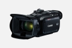

为满足视频爱好者在画质上的不断追求，作为佳能家用数码摄像机中的新旗舰机型，LEGRIA HF G40通过硬件和软件改进，进一步提升了光学性能和画质。LEGRIA HF G40使用了与佳能专业机型XA35/XA30相同的1/2.84”约309万总像素的HD CMOS PRO影像传感器，新传感器提高了聚光效率，使其信噪比相对上一代提升了3dB，即使在低照度拍摄环境下，也可以获得噪点更少、更为纯净的清晰画面。新的影像传感器配合新开发的26.8mm广角20倍光学变焦的高质量摄影镜头，配合DIGIC DV 4影像处理平台，令LEGRIA HF G40在性能上更具竞争力。